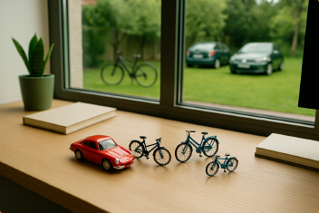

PREMIUM ENGLISH
We use demonstratives to point at people or things.
They show us where something is - near or far, singular or plural.
Used for one thing/person that is close to you.
Used for one thing/person that is far from you.
Used for multiple things/people that are close to you.
Used for multiple things/people that are far from you.
Look at the image and make oral sentences using this, that, these or those. Focus on distance and number. Use your imagination!

Example
"This is a red toy car."
Say at least 4 sentences!
Try to describe something close and something far, singular and plural. Use full sentences like:
"Those cars are far.", "These bicycles are small."